Victory Vibes
Instructions
In our video tutorial, we show in detail how to register and make your first deposit
Video instruction on how to register
Video instruction on how to make a deposit
×
Victory Vibes
Instructions
Contacts
Results
Forecasts
Start